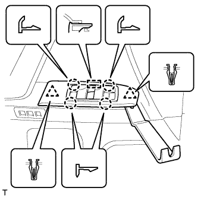
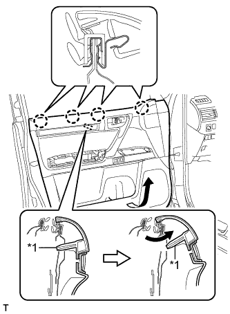
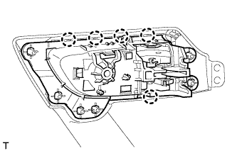
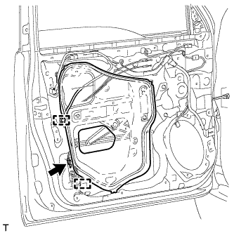
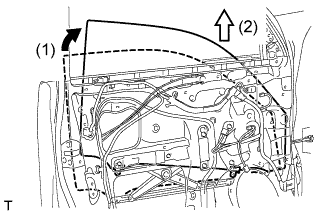
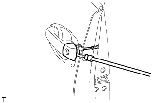

FRONT DOOR > DISASSEMBLY |
| 1. DISCONNECT CABLE FROM NEGATIVE BATTERY TERMINAL |
| Condition | Waiting Time |
| Vehicle enrolled in G-BOOK system | 6 minutes |
| Vehicle not enrolled in G-BOOK system | 1 minute |
| 2. REMOVE FRONT DOOR LOWER FRAME BRACKET GARNISH LH |
 |
Detach the 2 clips and remove the front door lower frame bracket garnish LH.
| 3. REMOVE FRONT DOOR INSIDE HANDLE BEZEL PLUG LH |
 |
Using a moulding remover, detach the 3 claws and remove the inside handle bezel as shown in the illustration.
| 4. REMOVE FRONT ARMREST ASSEMBLY LH |
 |
Using moulding remover B, detach the 7 claws and 7 guides, and remove the front armrest assembly as shown in the illustration.
| 5. REMOVE POWER WINDOW REGULATOR MASTER SWITCH ASSEMBLY WITH FRONT DOOR ARMREST BASE PANEL |
|  |
Using a moulding remover B, detach the 2 clips, 4 claws and guide as shown in the illustration.
Disconnect the connector and remove the power window regulator master switch assembly with front door armrest base panel.
| 6. REMOVE MULTIPLEX NETWORK MASTER SWITCH ASSEMBLY (for Driver Side) |
Remove the 3 screws.
Detach the 4 claws and remove the multiplex network master switch assembly.
| 7. REMOVE POWER WINDOW REGULATOR SWITCH ASSEMBLY (for Front Passenger Side) |
 |
Detach the 2 claws and remove the power window regulator switch assembly.
| 8. REMOVE FRONT DOOR TRIM BOARD SUB-ASSEMBLY LH |
 |
Remove the 2 screws.
Remove the 12 clips.
|  |
Pull out the front door trim board sub-assembly in the direction indicated by the arrow in the illustration.
| *1 | Reference Boss |
Raise the front door trim board sub-assembly to detach the 4 claws and remove the front door trim board sub-assembly together with the front door inner glass weatherstrip LH.
Disconnect the 2 connectors.
 |
Disconnect the front door lock remote control cable assembly and front door inside locking cable assembly.
| 9. REMOVE SEAT MEMORY SWITCH |
 |
Disconnect the connector and remove the 2 screws.
Detach the 2 claws and remove the switch.
| 10. REMOVE FRONT DOOR INNER GLASS WEATHERSTRIP LH |
 |
Using a screwdriver, detach the 4 claws and remove the front door inner glass weatherstrip from the front door trim board sub-assembly as shown in the illustration.
| 11. REMOVE FRONT DOOR INSIDE HANDLE SUB-ASSEMBLY LH |
Remove the 14 screws.
Move the assist grip together with the inside handle sub-assembly to detach the 9 guides.
Slide the assist grip together with the inside handle sub-assembly to make a space between the ornament panel and assist grip.
Rotate the assist grip together with the inside handle sub-assembly to detach the 2 guides on the rear of the trim, and then pull out the assist grip together with the inside handle sub-assembly.
|  |
Detach the 5 claws and remove the inside handle sub-assembly.
| 12. REMOVE COURTESY LIGHT ASSEMBLY |
 |
Detach the 2 claws and remove the light.
Disconnect the connector.
| 13. REMOVE FRONT DOOR INSIDE HANDLE ILLUMINATION LIGHT ASSEMBLY LH |
Disconnect the connector.
| *1 | Protective Tape |
Using a screwdriver, detach the claw and remove the light.
| 14. REMOVE OUTER MIRROR CONTROL ECU ASSEMBLY |
Using a clip remover, detach the clamp.
Disconnect the 2 connectors.
Remove the 2 screws and outer mirror control ECU assembly.
| 15. REMOVE FRONT NO. 1 SPEAKER ASSEMBLY |
 |
Disconnect the speaker connector.
Remove the 4 screws.
Detach the 2 claws and remove the speaker.
| 16. REMOVE SIDE AIRBAG SENSOR ASSEMBLY LH |
 |
Disconnect the connector.
Remove the bolt and side airbag sensor.
| 17. REMOVE FRONT DOOR SERVICE HOLE COVER LH |
|  |
Remove the bolt.
Detach the 2 clamps, move the wire harness out of the way and remove the service hole cover.
| 18. REMOVE OUTER REAR VIEW MIRROR ASSEMBLY LH |
w/ Side Monitor System:
Disconnect the 2 connectors and detach the clamp.
w/o Side Monitor System:
Disconnect the connector and detach the clamp.
Remove the 3 nuts.
Detach the claw and remove the outer rear view mirror.
| 19. REMOVE FRONT DOOR GLASS SUB-ASSEMBLY LH |
Connect the cable to the negative (-) battery terminal.
Connect the power window regulator master switch assembly and move the front door glass sub-assembly so that the door glass bolts can be seen.
Disconnect the cable from the negative (-) battery terminal and power window regulator master switch assembly.
| Condition | Waiting Time |
| Vehicle enrolled in G-BOOK system | 6 minutes |
| Vehicle not enrolled in G-BOOK system | 1 minute |
 |
Remove the 2 bolts.
|  |
Remove the front door glass sub-assembly as indicated by the arrows in the order shown in the illustration.
| 20. REMOVE FRONT DOOR WINDOW REGULATOR SUB-ASSEMBLY LH |
Disconnect the connector.
Loosen the temporary bolt.
| *1 | Temporary Bolt |
Remove the 5 bolts.
Remove the front door window regulator sub-assembly.
Remove the temporary bolt from the front door window regulator sub-assembly.
| 21. REMOVE POWER WINDOW REGULATOR MOTOR ASSEMBLY LH |
Using a T25 "TORX" socket wrench, remove the 3 screws and power window regulator motor.
| *1 | Spring | - | - |
| *a | Range of Movement | - | - |
| 22. REMOVE FRONT DOOR GLASS RUN LH |
 |
Remove the front door glass run.
| 23. REMOVE DOOR FRAME GARNISH LH |
 |
Detach the clip and remove the door frame garnish.
| 24. REMOVE FRONT DOOR REAR LOWER FRAME SUB-ASSEMBLY LH |
 |
Remove the bolt and front door rear lower frame sub-assembly as shown in the illustration.
| 25. REMOVE FRONT DOOR OUTSIDE HANDLE COVER WITH LOCK CYLINDER ASSEMBLY (for Driver Side) |
 |
Remove the hole plug.
|  |
Using a T30 "TORX" socket wrench, loosen the screw and remove the front door outside handle cover with lock cylinder assembly.
| 26. REMOVE FRONT DOOR OUTSIDE HANDLE COVER LH (for Driver Side) |
 |
Using a screwdriver, detach the claw and remove the front door outside handle cover.
| 27. REMOVE FRONT DOOR OUTSIDE HANDLE COVER RH (for Front Passenger Side) |
 |
Remove the hole plug.
 |
Using a T30 "TORX" socket wrench, loosen the screw and remove the front door outside handle cover.
| 28. REMOVE FRONT DOOR OUTSIDE HANDLE ASSEMBLY LH |
 |
Detach the 2 claws.
Disconnect the connector.
 |
Move the lever in the direction indicated by the arrow in the illustration.
 |
Remove the front door outside handle assembly as shown in the illustration.
| 29. REMOVE FRONT DOOR FRONT OUTSIDE HANDLE PAD LH |
 |
Detach the 3 claws and remove the front door front outside handle pad.
| 30. REMOVE FRONT DOOR REAR OUTSIDE HANDLE PAD LH |
Detach the 2 claws and remove the front door rear outside handle pad.
| 31. REMOVE FRONT DOOR LOCK ASSEMBLY LH |
Disconnect the connector.
 |
Using a T30 "TORX" wrench, remove the 3 screws.
 | Slide |
Slide the front door lock assembly downward, pull out the front door lock open rod from the outside handle frame, and remove the front door lock assembly and cables as a unit.
Remove the front door lock open rod from the front door lock assembly.
Remove the door lock wiring harness seal from the front door lock assembly.
| 32. REMOVE FRONT DOOR LOCK REMOTE CONTROL CABLE ASSEMBLY LH |
 |
Remove the front door lock remote control cable assembly.
| 33. REMOVE FRONT DOOR INSIDE LOCKING CABLE ASSEMBLY LH |
 |
Using a screwdriver, detach the 3 claws.
 |
Remove the front door inside locking cable assembly.
| 34. REMOVE FRONT DOOR OUTSIDE HANDLE FRAME SUB-ASSEMBLY LH |
 |
Disconnect the connector.
Detach the clamp and remove the front door No. 2 wire.
 |
Using a T30 "TORX" socket wrench, loosen the screw.
Slide the front door outside handle frame sub-assembly to detach the door handle nut and claw of the front door outside handle frame sub-assembly, and then remove the front door outside handle frame sub-assembly.
| 35. REMOVE FRONT DOOR NO. 2 WIRE LH |
 |
Detach the 4 clamps and remove the front door No. 2 wire.
| 36. REMOVE FRONT DOOR LOCK OPEN ROD LH |
Remove the front door lock open rod as indicated by the arrows, in the order shown in the illustration.
| 37. REMOVE FRONT DOOR NO. 2 STIFFENER CUSHION |
Remove the 2 bolts.
| *1 | Double-sided Tape |
Detach the 2 claws and remove the front door No. 2 stiffener cushion.
| 38. REMOVE FRONT DOOR CHECK ASSEMBLY LH |
 |
Remove the bolt, 2 nuts and front door check assembly.
| 39. REMOVE FRONT DOOR WEATHERSTRIP LH |
Using a clip remover, detach the 21 clips and remove the front door weatherstrip.
| *1 | double-sided tape |
| 40. REMOVE FRONT DOOR BELT MOULDING LH |
 |
Put protective tape around the belt moulding.
Detach the 6 claws and remove the front door belt moulding.
| *1 | Protective Tape |
| 41. REMOVE FRONT DOOR REAR WINDOW FRAME MOULDING LH |
| Item | Temperature |
| Vehicle Body | 40 to 60°C (104 to 140°F) |
| Window Frame Moulding | 20 to 30°C (68 to 86°F) |
 |
Remove the door window frame moulding clip.
 |
Put protective tape around the front door rear window frame moulding.
Using a moulding remover, detach the clip and remove the double-sided tape to remove the front door rear window frame moulding.
| *1 | Protective Tape |
| *2 | Double-sided Tape |
| *3 | Moulding Remover |
| 42. REMOVE NO. 1 BLACK OUT TAPE LH |
 |
| Item | Temperature |
| Vehicle Body | 40 to 60°C (104 to 140°F) |
| Black Out Tape | 20 to 30°C (68 to 86°F) |
Pull back an edge of the black out tape and pull it parallel to the vehicle body to remove it.
| 43. REMOVE FRONT DOOR OUTSIDE STRIPE LH |
 |
| Item | Temperature |
| Vehicle Body | 40 to 60°C (104 to 140°F) |
| Outside Stripe | 20 to 30°C (68 to 86°F) |
Pull back an edge of the front door outside stripe and pull it parallel to the vehicle body to remove it.
| 44. REMOVE LOWER FRONT DOOR OUTSIDE STRIPE LH |
 |
| Item | Temperature |
| Vehicle Body | 40 to 60°C (104 to 140°F) |
| Outside Stripe | 20 to 30°C (68 to 86°F) |
Pull back an edge of the lower front door outside stripe and pull it parallel to the vehicle body to remove it.
| 45. REMOVE FRONT DOOR PANEL CUSHION |
 |
Using a clip remover, detach the clip and remove the door panel cushion.